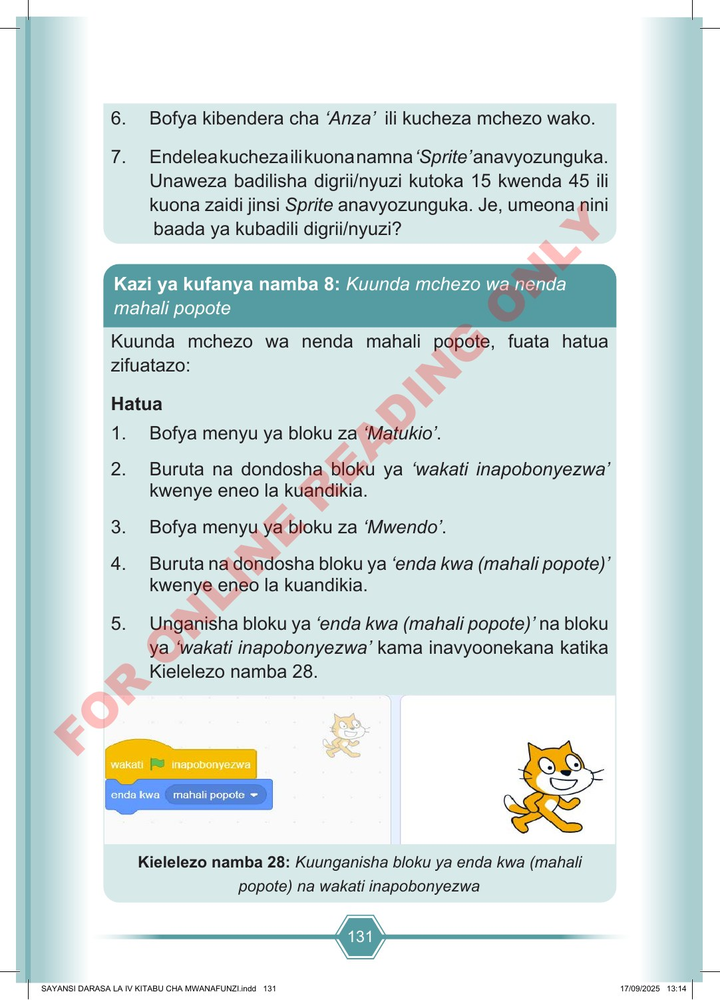

131 6. Bofya kibendera cha ‘Anza’ ili kucheza mchezo wako. 7. Endelea kucheza ili kuona namna ‘Sprite’ anavyozunguka. Unaweza badilisha digrii/nyuzi kutoka 15 kwenda 45 ili kuona zaidi jinsi Sprite anavyozunguka. Je, umeona nini baada ya kubadili digrii/nyuzi? Kuunda mchezo wa nenda mahali popote, fuata hatua zifuatazo: Hatua 1. Bofya menyu ya bloku za ‘Matukio’. 2. Buruta na dondosha bloku ya ‘wakati inapobonyezwa’ kwenye eneo la kuandikia. 3. Bofya menyu ya bloku za ‘Mwendo’. 4. Buruta na dondosha bloku ya ‘enda kwa (mahali popote)’ kwenye eneo la kuandikia. 5. Unganisha bloku ya ‘enda kwa (mahali popote)’ na bloku ya ‘wakati inapobonyezwa’ kama inavyoonekana katika Kielelezo namba 28. Kielelezo namba 28: Kuunganisha bloku ya enda kwa (mahali popote) na wakati inapobonyezwa Kazi ya kufanya namba 8: Kuunda mchezo wa nenda mahali popote SAYANSI DARASA LA IV KITABU CHA MWANAFUNZI.indd 131 SAYANSI DARASA LA IV KITABU CHA MWANAFUNZI.indd 131 17/09/2025 13:14 17/09/2025 13:14 F O R O N L I N E R E A D I N G O N L Y